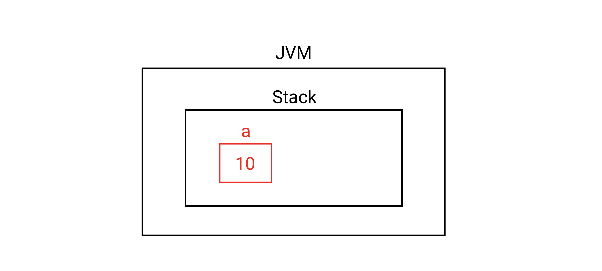
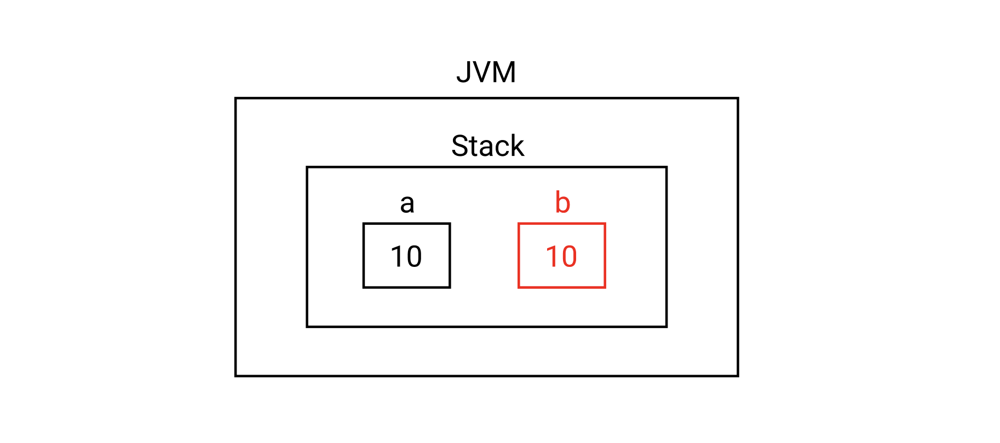
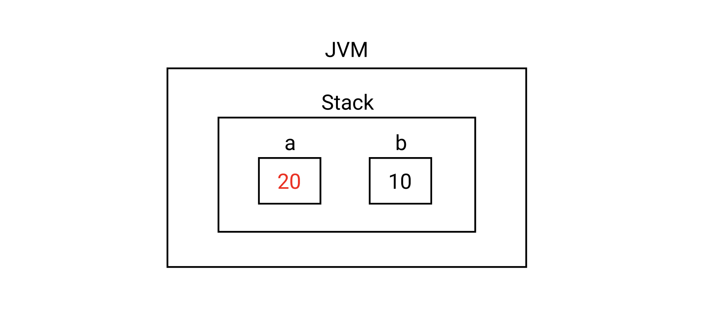
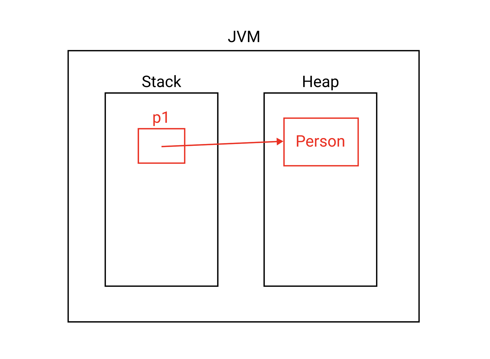
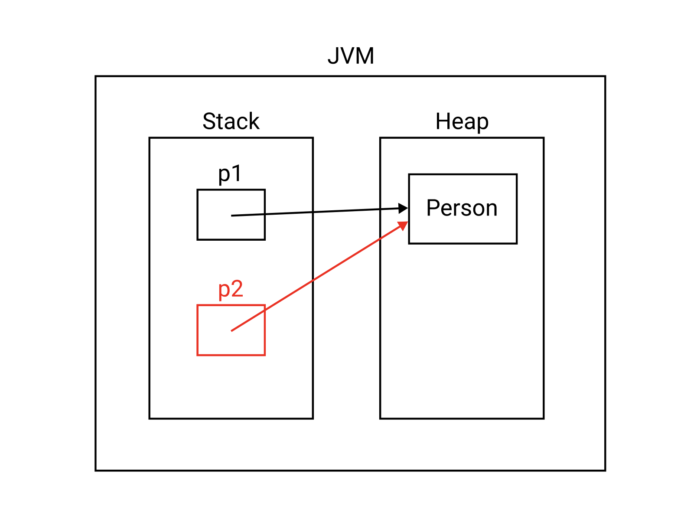
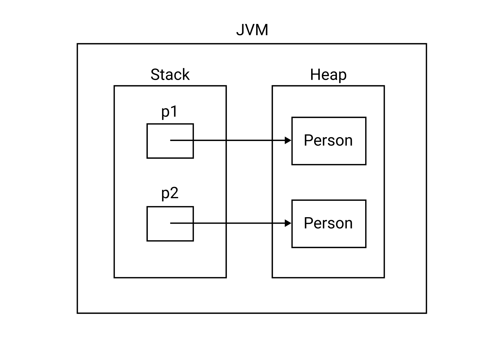

[Java] 얕은 복사와 깊은 복사, clone()과 Cloneable 인터페이스
얕은 복사와 깊은 복사를 이해하려면 원시 타입과 참조 타입에 관한 포스트를 먼저 읽어보길 권장한다.
원시 타입의 값 복사
예제를 살펴보자. 다음과 같이 int타입의 변수 a를 생성하고 값을 할당하자.
1 | int a = 10; |
메모리 구조는 다음과 같다.

변수 b를 설정하고 값을 할당하자.
1 | int a = 10; |

이제 변수 a의 값을 변경하자. a를 변경해도 b는 영향받지 않는다.
1 | int a = 10; |

예제에서 살펴본 것 처럼 원시타입의 값 복사는 대입연산자(=)를 사용해도 문제가 없다.
참조 타입의 얕은 복사
얕은 복사의 예제를 살펴보자. Person타입의 변수 p1을 생성하고 객체를 할당하자.
1 | Person p1 = new Person("Paul"); |
메모리 구조는 다음과 같다.

참조 타입의 얕은 복사(shallow copy)는 대입 연산자(=)를 사용한다
1 | Person p1 = new Person("Paul"); |
메모리 구조는 다음과 같다.

얕은 복사의 문제점
이제 변수 p1이 가리키는 객체의 속성을 변경해보자.
1 | Person p1 = new Person("Paul"); |
출력값을 확인해보자
1 | Monica |
변수 p1가 가리키는 객체의 속성값을 변경했는데 변수 p2가 가리키는 객체의 속성값도 변경됐다. 대입 연산자(=)를 통한 얕은 복사는 두 변수가 같은 객체를 가리키기 때문이다.
깊은 복사
완전히 같은 속성 값을 가진 새로운 객체를 복사하면서, 이전 객체에는 아무런 영향이 없도록 하는 것을 깊은 복사(Deep copy)라고 한다.
깊은 복사를 사용하려면 Cloneable인터페이스를 구현하고 clone()메소드를 오버라이드해야한다.
1 | class Person implements Cloneable { |
이제 다음과 같이 깊은 복사를 할 수 있다.
1 | public class Main { |
메모리 구조는 다음과 같다.
